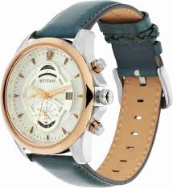
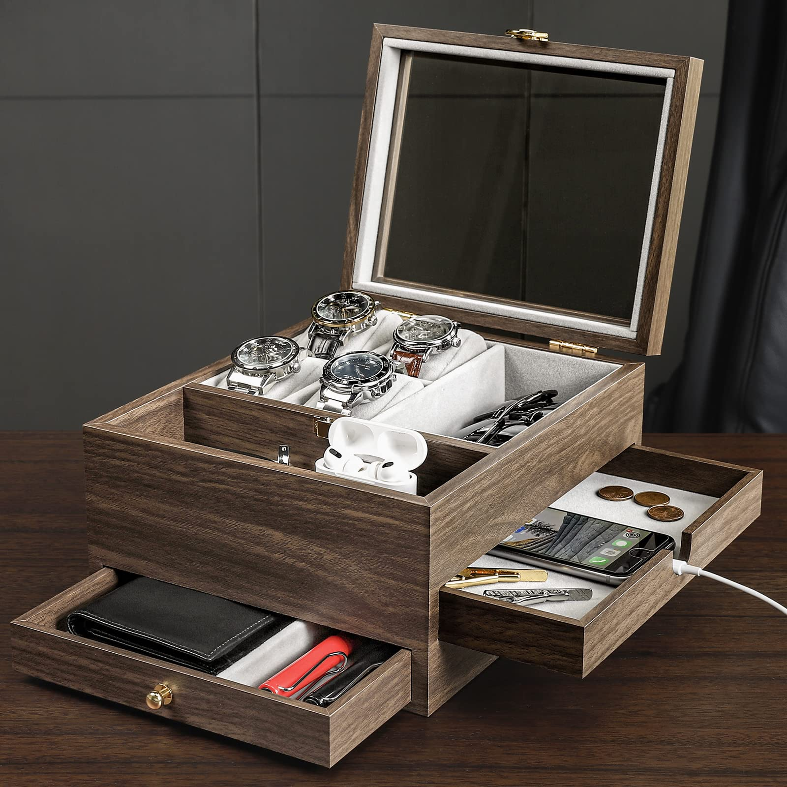

Titan Maritime Chronograph 1830KL01
Nautical Elegance Meets Practical Design

★★★★☆
Price: $180
The Titan Maritime Chronograph 1830KL01 delivers a compelling blend of nautical-inspired design and practical functionality that punches well above its price point. After two years of consistent wear, this timepiece has proven to be a versatile companion suitable for both casual and semi-formal occasions.
At first glance, the watch's aesthetic immediately captivates with its striking white dial featuring lateen sail-inspired indices—a thoughtful design element that reinforces the maritime theme without being overly literal. The stainless steel case measures a comfortable 42mm diameter with a slim 11mm profile that slides easily under shirt cuffs. The genuine leather strap in rich brown complements the white dial beautifully and develops a pleasant patina with regular wear, though it does require approximately a week to fully break in and conform to the wrist.
The chronograph functionality operates with satisfying precision. The main second hand sweeps smoothly when timing events, while the subdial at 9 o'clock tracks small seconds and the date window at 3 o-clock shows the date. The pushers provide just the right amount of resistance—firm enough to prevent accidental activation but not so stiff as to be difficult to operate. Water resistance is rated at 50 meters, making it splash-proof and suitable for brief immersion, though not ideal for swimming or water sports—a limitation worth noting for those seeking a true dive watch alternative.
Nighttime legibility exceeds expectations thanks to the generously applied luminous material on the hands and hour markers. After charging in daylight, the lume emits a consistent blue glow that remains visible throughout the night, outperforming several watches at similar price points. The mineral crystal has proven reasonably resilient against minor impacts and daily wear, though it lacks the scratch resistance of sapphire found in higher-end timepieces.
The Japanese quartz movement provides exceptional accuracy, deviating by only 2 seconds over my three-week testing period. While mechanical watch enthusiasts might prefer an automatic movement for its craftsmanship, the maintenance-free nature of quartz makes this an excellent option for daily wear. Battery life is rated at approximately 3 years, aligning with industry standards for similar chronograph movements.
Pros
- Elegant nautical design with distinctive indices
- Excellent lume performance
- Precise Japanese quartz movement
- Comfortable 42mm case size
- Quality leather strap develops nice patina
Cons
- Chronograph seconds hand occasionally misaligns
- Crown doesn't screw down for extra water protection
- Limited 50m water resistance
- Leather strap requires break-in period
Not everything about the Titan Maritime hits the mark perfectly. The chronograph seconds hand sometimes misaligns slightly with the markers when reset—a common quirk with quartz chronographs in this price category. Additionally, while the crown is well-sized for operation, it doesn't screw down, which would have provided an extra level of water resistance security.
Priced at approximately $180, the Titan Maritime 1830KL01 represents exceptional value for a chronograph with such thoughtful design details and reliable functionality. For those seeking a nautically-inspired timepiece that balances aesthetic appeal with everyday practicality, this Titan offering deserves serious consideration. It successfully captures the essence of much pricier marine chronographs while maintaining an accessible price point that makes it an excellent entry point into stylish chronograph watches.
View Product Details
Review by Dev Shah | Published: April 7, 2025
Homde Wooden Watch Box Organizer
Elegant Storage with Multi-Functional Design

★★★★☆
Price: $45
The Homde Wooden Watch Box Organizer offers an attractive and practical storage solution for watch enthusiasts who need an organized system for their timepieces and everyday accessories. After using this organizer daily for over a year, I've thoroughly evaluated its design, functionality, and overall value.
First impressions are overwhelmingly positive, with the box's high-end wooden structure and beautiful natural wood grain immediately setting it apart from plastic or synthetic leather alternatives. Measuring 10.2 x 8.7 x 5.7 inches, it occupies minimal space while offering surprisingly generous storage capacity. The real glass lid serves dual purposes—protecting watches from dust while providing a clear display window to showcase your collection. This transparency transforms the storage box into a display piece worthy of placement on nightstands, desks, or dresser tops. The hardware decorations and hinges operate smoothly without squeaking, and the box closes securely to protect valuable contents.
The three-layer design demonstrates thoughtful consideration for the organization needs of watch collectors and professionals alike:
- Top Layer: Features four dedicated watch pillows that accommodate various bracelet and strap sizes while leaving sufficient space for everyday items like sunglasses, wireless earphones, or keys in the two additional compartments.
- Middle Drawer: Offers a large undivided compartment ideal for storing cell phones, bracelets, rings, cufflinks, and other small accessories. The strategically placed charging hole in this drawer proves remarkably practical, allowing smartphone charging while keeping devices neatly stored.
- Bottom Drawer: With its two partitions perfectly accommodates larger items such as pens, notebooks, and wallets, effectively centralizing daily essentials in one accessible location.
I particularly appreciate the watch pillows' construction—firm enough to maintain their shape while soft enough to prevent damage to leather straps. The soft lining throughout provides excellent protection against scratches and damage.
Pros
- Attractive wood grain finish
- Multi-functional three-layer design
- Practical charging hole for smartphones
- Glass display lid showcases collection
- Soft protective interior lining
Cons
- Wood likely veneer rather than solid hardwood
- Watch pillows slightly smaller than specialized boxes
- Middle drawer sometimes sticks when fully extended
- Corner joints show quality limitations
Where this Homde organizer truly excels is in its versatility. The multi-functional design adapts to different organizational needs, allowing users to store watches alongside everyday accessories in a cohesive system. I've found the box particularly useful for keeping track of items I frequently misplace—having designated spots for keys, wireless earbuds, and sunglasses has noticeably streamlined my morning routine.
However, several limitations become apparent with extended use. While the wood construction appears premium at first glance, closer inspection reveals that it's likely a veneer rather than solid hardwood, particularly evident at corner joints. The watch pillows, though functional, are slightly smaller than those found in dedicated watch boxes, occasionally making it challenging to secure watches with longer straps. Most notably, the middle drawer sometimes sticks when fully extended, requiring additional force to close completely—an issue that slightly detracts from the otherwise smooth operation.
Priced at approximately $45, the Homde Wooden Watch Box Organizer delivers excellent value despite its minor shortcomings. It successfully balances attractive aesthetics with practical organization at an accessible price point. For those seeking a gift for watch enthusiasts or individuals who appreciate organized storage solutions, this multi-functional box makes an impressive present for birthdays, Father's Day, anniversaries, or holidays. It may not match the craftsmanship of high-end watch cases costing hundreds of dollars, but it effectively combines style and functionality for everyday organization of watches and accessories in a visually appealing package.
Check Price on Amazon
Review by Dev Shah | Published: April 7, 2025